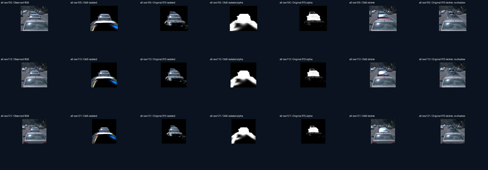
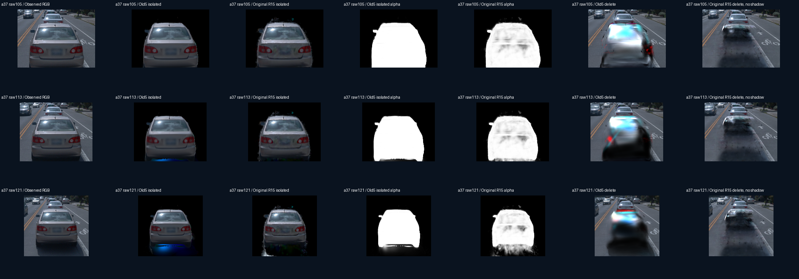

按同一真实身份核对 a6、a37、a5、a26、a18。进入 0／1／unknown 交互可视化与谱系审计。
| 模型 | 实际状态 | 可按真实身份独立／删除 |
|---|---|---|
| 历史旧 3 身份 30K | 完成：49 × 3 身份／帧，参数更新 0 | a5、a26、a18 |
| 补齐旧 5 身份 30K | 完成：49 × 5 身份／帧，参数更新 0 | a5、a26、a18、a6、a37 |
| 冻结 R15 4K | 完成：49 × 5 身份／帧，参数更新 0 | a5、a26、a18、a6、a37 |
新增五身份沿用旧版 100×完整可见实例 mask MSE、框约束、固定拓扑、固定姿态和 seed=0。背景与实例共同优化（background lr scale=0.1），环境冻结。a5／a26／a18 的初始位置和 RGB 与旧种子逐位一致；a6／a37 使用经 49 帧身份核对的原生完整 SAM 提议。R15 的融合三值掩码保持原样；两版的输入覆盖差异必须结合三值页面解释。未重新训练 GN11，未加载 R15 或旧实例已学习权重作为新增实例种子。
| 同一车辆 | 旧5 owner ↔ R15 owner | 旧5 初始 → 30K 点数 | 原 R15 4K 点数 | 旧5 框外中心 | 原 R15 框外中心 |
|---|---|---|---|---|---|
| a6 | 3 ↔ 6 | 15,021 → 15,021 | 123,800 | 560 / 15,021 (3.73%) | 29,828 / 123,800 (24.09%) |
| a37 | 4 ↔ 37 | 116,673 → 116,673 | 83,130 | 7,407 / 116,673 (6.35%) | 14,573 / 83,130 (17.53%) |
| a5 | 0 ↔ 5 | 138,158 → 138,158 | 53,434 | 2,724 / 138,158 (1.97%) | 2,257 / 53,434 (4.22%) |
| a26 | 1 ↔ 26 | 29,455 → 29,455 | 80,553 | 721 / 29,455 (2.45%) | 5,515 / 80,553 (6.85%) |
| a18 | 2 ↔ 18 | 3,220 → 3,220 | 125,207 | 1,126 / 3,220 (34.97%) | 58,148 / 125,207 (46.44%) |
两版均以同一物理米坐标、同一 train46 中位真实车框统计，使用 0.00001m 容差避免归一化/FP32 的边界舍入被计为物理越界。精确无容差与旧原生框统计也保存在凭据中。旧版固定拓扑；两版初始化和训练长度不同，点数、框外比例均不是道路污染或资产质量真值。全量统计与归属映射 · 旋转查看旧5与原R15的Gaussian中心
下图固定 raw105／113／121，所有模型使用同一输入掩码确定局部展示窗口。旧5的 a6 独立 RGB／alpha 中可见连续的大面积下部支撑和亮白、蓝色条带；原 R15 的下部表现为零散碎片。a37 删除后两版都未留下干净道路，旧5有明亮车形残留，原 R15 关阴影后仍有较暗车形。这里是三个固定锚帧的工程观察，不给全49帧人工质量评分。
例如旧5的 a6 仅约3.73%中心越出共同车框，但其最大主轴σ达到约3.29m；少数大尺度点也能产生明显外溢。框外率低不能证明独立资产更干净。旧5是新增两个真实owner后的基线扩展，不能倒推历史旧3检查点已具备同样可分离归属。


本页保存全49帧视频和固定锚帧对照。全部原分辨率逐帧 PNG 与交互选择位于用户本地 outputs/identity_comparison_20261018/index.html，原始浮点结果保留远端。旧基线与原R15输入、阶段不同，不作单因果质量归因。